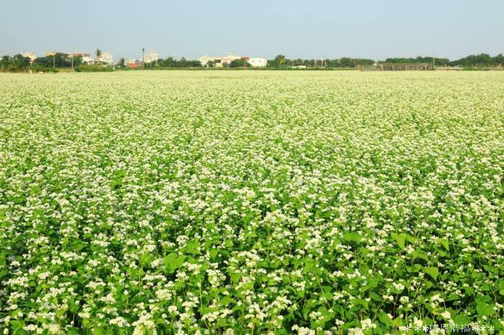

彰化二林
Changhua Erlin
地址：彰化縣二林鎮香田里儒林路
二林有三寶特產：葡萄、蕎麥、紅薏仁，而因為盛產葡萄，所以二林有釀造各式各樣的葡萄酒，而且重要的是釀酒技術也不輸國外哦！況且二林還是全台鄉鎮中，也是酒莊密度最高的鄉村。館內中陳設的商品大多是使用當地特產的三寶，加工製作而成的農特產，像是葡萄酒、紅薏仁、蕎麥蛋捲…等。
二林是全省種植蕎麥的重要產區，不知道是不是因為韓劇～鬼怪，收視率極佳的緣故，蕎麥花田更是成了許多網美及眾多遊客喜愛拍照的熱門景點。而二林種植蕎麥花田較集中的地區就位在的二林鎮儒林路10-1號附近的香田國小邊。
更多介紹：